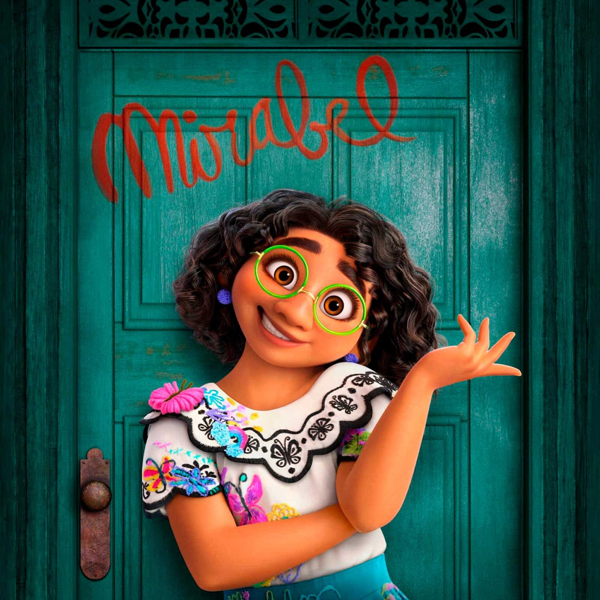
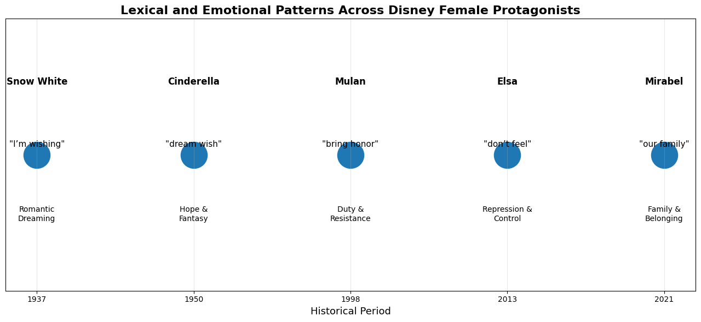

Results


Figure 1. Evolution of Emotional Language
The figure compares sentiment scores across Snow White, Cinderella, Mulan, Elsa, and Mirabel.
Earlier protagonists show positive and romantic language, while later characters reflect identity, conflict, and complexity.


Figure 2. Theme Evolution
Snow White and Cinderella have the highest romance and domesticity scores (9–10), reflecting traditional femininity.
Mulan shows identity and independence (8–9), Elsa has emotional control (10), and Mirabel has the strongest family score (10).


Figure 3. Positive vs. Negative Emotional Language
Mirabel has the highest positive sentiment score (0.284), while Elsa has the highest negative sentiment score (0.144).
Cinderella also shows strong positivity (0.229), while Mulan has a more balanced emotional profile.


Figure 4. Lexical and Emotional Patterns
Snow White and Cinderella use romantic and emotionally soft expressions, while Mulan emphasizes duty and resistance.
Elsa shows emotional repression and control, whereas Mirabel focuses on family belonging and emotional support.